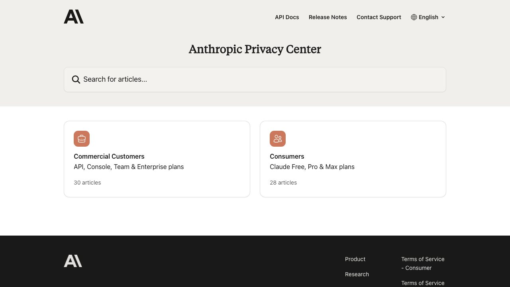

C ada vez que escribes en un asistente de IA le entregas algo más que una pregunta: le das una pista de lo que te preocupa, de cómo trabajas, de quién eres. Y casi nadie sabe responder con seguridad a tres preguntas básicas: si esa conversación sirve para entrenar el modelo, cuánto tiempo se queda guardada y si alguna persona puede llegar a leerla. La respuesta cambia según el servicio, según el tipo de cuenta y, sobre todo, según un puñado de ajustes que casi nadie ha mirado.
1. Cuatro cosas que se confunden
Cuando alguien dice «mis datos están seguros» o «mis datos no son privados», casi siempre está mezclando cuatro mecanismos distintos. Separarlos es lo que más te va a servir, porque cada uno se controla con un ajuste diferente y ninguno hace el trabajo de los otros.
- Entrenamiento. Que tus conversaciones se usen para mejorar futuros modelos. Es lo que más preocupa y, paradójicamente, lo más fácil de apagar: casi todos los servicios de consumo tienen un interruptor.
- Retención. Cuánto tiempo conserva la empresa una conversación en sus sistemas, aunque no la use para entrenar. Apagar el entrenamiento no borra nada ni acorta ese plazo.
- Revisión humana. Que una persona, empleada de la empresa o de un proveedor, pueda leer una parte de las conversaciones, ya sea para mejorar el servicio, para revisar abusos o para cumplir la ley.
- Memoria y personalización. Que el asistente recuerde cosas tuyas de un chat a otro. No tiene que ver con el entrenamiento: es una función del producto que usa tus conversaciones pasadas para responderte mejor.
La segunda idea que conviene tener clara desde el principio: todo lo que sigue se refiere a las cuentas personales (gratuitas y de suscripción individual). Las cuentas de empresa, las de centros educativos y la API se rigen por otras reglas, normalmente más estrictas con los datos del cliente, y las tratamos aparte en la sección 6. Y las cifras y los nombres de los menús son los que publicaban OpenAI, Anthropic y Google en octubre de 2026; cambian con frecuencia, así que ante la duda manda lo que veas en tu pantalla.
Una advertencia de método: las páginas de Google y Anthropic las leímos directamente; las de OpenAI bloquean la descarga automática y las contrastamos con el resumen de su centro de ayuda, así que comprueba en tu cuenta los matices de ChatGPT.
2. ChatGPT: qué guarda y qué puedes cambiar
En ChatGPT, el interruptor del entrenamiento vive en los controles de datos de tu cuenta, con el nombre «Improve the model for everyone» (en la interfaz en español aparece traducido; el nombre exacto varía). Según OpenAI, en la web está en Ajustes → Controles de datos, en el móvil en el menú de tu perfil, y el cambio vale para todos tus dispositivos. Un detalle que importa y que la propia ayuda de OpenAI subraya: desactivar la mejora del modelo no borra tu historial. Tus chats siguen ahí, guardados, hasta que los borres tú.
Hay una segunda herramienta, más radical, que mucha gente no conoce: el chat temporal. Según el centro de ayuda de OpenAI, una conversación temporal no aparece en tu historial y no se usa para mejorar los modelos mientras siga siendo temporal. La letra pequeña es que OpenAI puede conservar una copia hasta 30 días por motivos de seguridad. Dicho de otro modo: es un chat que tú no ves después y que no entrena, pero no es un chat que la empresa no haya visto pasar. Y si decides guardar uno temporal, deja de serlo: pasa a regirse por tu ajuste de mejora del modelo y por las reglas de los chats guardados.
Sobre el borrado, OpenAI explica que los chats que eliminas se programan para borrarse de forma permanente de sus sistemas en un plazo de 30 días, con dos excepciones que la propia empresa menciona: que el chat ya hubiera sido disociado de tu cuenta y des-identificado, o que OpenAI tenga que conservarlo por motivos legales o de seguridad. Esa segunda excepción es la que conviene recordar: borrar significa «ya no lo ves y se programa su eliminación», no «desaparece al instante y sin condiciones». Si lo que te preocupa es una obligación legal de conservación impuesta a la empresa, ningún ajuste tuyo la sortea.
Queda la memoria. ChatGPT puede guardar datos tuyos para personalizar respuestas y puede, además, hacer referencia a conversaciones anteriores. Los controles están en el apartado de personalización de los ajustes: puedes ver qué recuerda, borrar recuerdos concretos o apagar la función. OpenAI avisa de que, incluso con la memoria o la personalización apagadas, sus funciones de seguridad pueden usar un contexto limitado en situaciones raras de alto riesgo. Cómo funciona por dentro: ventana de contexto y memoria.
Lo mínimo en ChatGPT
- Apaga «Improve the model for everyone» en Controles de datos si no quieres que tus chats entrenen modelos.
- Usa un chat temporal para lo delicado, sabiendo que puede quedar una copia hasta 30 días.
- Revisa la memoria y borra lo que no quieras que se arrastre de una conversación a otra.
- Recuerda que borrar un chat programa su eliminación en 30 días, con excepciones legales y de seguridad.
3. Claude: tres planes, un interruptor y un modo incógnito
Anthropic distingue entre sus planes de consumo (Free, Pro y Max, incluido el uso de Claude Code desde esas cuentas) y los comerciales. Para los de consumo, el centro de privacidad de Anthropic —con su artículo sobre cuánto tiempo guarda tus datos, actualizado el 1 de julio de 2026— deja las reglas bastante claras, y son más detalladas que las de sus competidores.
El interruptor se llama «Model Improvement» (mejora del modelo; en la interfaz, algo como «Help improve our AI models»). Lo encuentras en el menú de tu cuenta, Ajustes → Privacidad. Con él activado, Anthropic dice que puede conservar tus datos de forma des-identificada hasta cinco años en sus procesos de entrenamiento, y que eso se aplica a los chats nuevos o retomados después de activarlo. Con él desactivado, la empresa afirma que no usará tus chats anteriores ni los nuevos para entrenar futuros modelos y que los que borres tampoco. El matiz honesto: lo que ya entró en un entrenamiento en marcha o en un modelo ya entrenado no se puede sacar de ahí.
Lo que el interruptor no toca es la retención: un chat borrado desaparece de tu historial al instante y de los sistemas internos en 30 días; las conversaciones marcadas por infringir la política de uso pueden conservarse hasta dos años; y los datos de las valoraciones con pulgar arriba o abajo, cinco años, porque se guarda la conversación entera (sin tu identificador). Si hablas de algo delicado, no valores esa respuesta.
Por último, el modo incógnito. Anthropic dice que las conversaciones incógnitas no se usan para mejorar Claude aunque tengas la mejora del modelo activada, y que Claude no las recuerda: no pasan a la memoria ni al historial. Se activa con el icono del fantasma al abrir un chat nuevo fuera de un proyecto. También deja fuera del entrenamiento el contenido en bruto que traen los conectores (Google Drive, servidores MCP) salvo que lo copies tú al chat, un detalle útil si usas Claude con tus archivos; si quieres entender qué abre cada conexión, mira cómo funciona el protocolo MCP.
Lo mínimo en Claude
- Decide a conciencia el interruptor de Ajustes → Privacidad: no des por hecho en qué posición está.
- Usa el modo incógnito para lo delicado (icono del fantasma).
- No valores con el pulgar las respuestas de conversaciones sensibles: la valoración guarda el chat entero hasta cinco años.
- Borrar elimina del historial al momento y de los sistemas internos en 30 días.
4. Gemini: 72 horas, revisores humanos y tres años
Google es el que más información da sobre la revisión humana, y también el que más conviene leer despacio. Su página de privacidad de Gemini Apps (actualizada el 13 de octubre de 2026) gira en torno a un ajuste llamado «Keep Activity» (Mantener actividad). Con él activado, tus chats y lo que compartes con Gemini se guardan en tu actividad. Con él desactivado, los chats futuros no aparecen en tu actividad y no se usan para entrenar modelos, salvo que envíes comentarios, pero se siguen guardando 72 horas con tu cuenta, para poder responderte, procesar valoraciones y proteger a Google y a sus usuarios.
En la web, según la ayuda de Gemini, se llega a él en gemini.google.com, Configuración y ayuda → Actividad, y ahí pulsas el control «Activado» y eliges «Desactivar» o «Desactivar y eliminar actividad». Por defecto, en mayores de 18 años, viene activado. La actividad se borra sola a los 18 meses salvo que cambies el plazo a 3, 36 meses o a indefinido.
Después viene la parte que sorprende. Google reconoce que un subconjunto de chats lo revisan personas para mejorar sus servicios, desconectados de tu cuenta antes de llegar a los proveedores que los revisan. Esos chats revisados se conservan hasta tres años y, y esto es lo importante, no se borran cuando borras tu actividad, porque se guardan aparte. Lo mismo ocurre con las valoraciones: se conservan hasta tres años desligadas de tu cuenta.
Tres matices que cambian el cálculo. Primero, los chats temporales de Gemini no se usan para entrenar modelos de Google ni para mejorarlos con revisores humanos, pero se guardan con tu cuenta 72 horas como los del ajuste desactivado. Segundo, la memoria de chats pasados es un control aparte que requiere tener Keep Activity activado: si lo apagas, no está disponible, y tampoco algunas aplicaciones conectadas como las de Google Workspace. Tercero, si usas una cuenta de trabajo o de centro educativo, la actividad de Gemini la controla el administrador y los términos de tratamiento de datos pueden ser distintos.
Lo mínimo en Gemini
- Si no quieres que nadie revise tus chats ni entrenen modelos, desactiva Keep Activity, sabiendo que 72 horas se guardan igualmente.
- Cambia el borrado automático (18 meses por defecto) a 3 meses si no necesitas el historial.
- No des por hecho que borrar la actividad elimina los chats ya revisados por una persona: se guardan aparte hasta tres años.
- En una cuenta de trabajo o del colegio manda el administrador.
5. La comparación, en una tabla
Para que puedas ver las diferencias de un vistazo, esto es lo que cada servicio publica a octubre de 2026 para sus cuentas personales. Son datos de las páginas oficiales citadas al final; cuando una celda dice «no consta» significa que no lo hemos encontrado en la página que pudimos leer, no que no exista.
| Aspecto | ChatGPT (OpenAI) | Claude (Anthropic) | Gemini (Google) |
|---|---|---|---|
| Interruptor del entrenamiento | «Improve the model for everyone», en Controles de datos | «Model Improvement», en Ajustes → Privacidad | «Keep Activity», en Actividad |
| Qué pasa si lo apagas | No se borra el historial | No se usan tus chats para futuros entrenamientos; lo ya entrenado queda | No se entrena, pero se guarda 72 horas |
| Modo sin rastro | Chat temporal: sin historial ni mejora; copia hasta 30 días por seguridad | Incógnito: sin memoria, historial ni mejora | Chat temporal: sin entrenamiento ni revisión humana; 72 horas |
| Tras borrar un chat | Eliminación programada en 30 días, con excepciones legales y de seguridad | Fuera del historial al instante; fuera de sistemas internos en 30 días | Se borra de tu actividad; los chats ya revisados por personas siguen aparte |
| Retención destacada | No consta un plazo máximo único | Hasta 5 años (entrenamiento activado); 2 años si el chat se marca por infracción | Hasta 3 años en chats y valoraciones revisados |
| Revisión humana | Posible por seguridad y abuso | Chats marcados por seguridad | Subconjunto de chats, desconectados de tu cuenta |
| Memoria | Ajustes de personalización | Búsqueda de chats y memoria en la app | Control aparte; requiere Keep Activity |
Ninguno de los tres «no guarda nada» y ninguno promete borrar al instante todo rastro. Lo útil es aprender la herramienta de cada uno para lo delicado: incógnito en Claude, chat temporal en ChatGPT y Gemini, o Keep Activity apagado.
6. Cuentas de trabajo, de centro educativo y API
Todo lo anterior cambia cuando no pagas tú ni usas tu correo personal. OpenAI publica en su página de privacidad empresarial que los productos de empresa (ChatGPT Business, Enterprise, Edu y la plataforma API) no entrenan con tus datos por defecto, salvo que la organización decida compartirlos, por ejemplo con herramientas de comentarios. Anthropic afirma lo mismo para sus productos comerciales: Claude for Work (Team y Enterprise) y su API no usan tus entradas ni salidas para entrenar, salvo que la organización lo acepte expresamente, y en ese caso Anthropic actúa como encargado del tratamiento siguiendo las instrucciones del cliente. Google, por su parte, indica que las cuentas de trabajo o de centro educativo pueden estar sujetas a términos distintos y remite al centro de privacidad de Workspace.
Dos precisiones que evitan malentendidos. La primera: «no entrena» no significa «nadie puede verlo». OpenAI aclara que el acceso a los datos almacenados de empresa lo tienen empleados autorizados y contratistas vinculados, para revisión de abusos, soporte técnico y cumplimiento legal; y en muchas organizaciones el administrador de la cuenta puede acceder a lo que escribes o exportarlo, según cómo la haya configurado. La segunda: que el proveedor no entrene con tus datos no quita que tu empresa sí pueda leerlos, ni que debas tratar con cuidado los datos personales de tus clientes. Si eres autónomo o tienes una pyme, esto último es lo que más te interesa, y lo desarrollamos en nuestra guía de IA para autónomos y pymes en España.
Una regla simple para el día a día: no mezcles. Si tu empresa te da una cuenta corporativa, usa esa para el trabajo, y no pegues nada del trabajo en tu cuenta personal «porque es más cómoda». Y al revés: lo personal delicado, fuera de la cuenta del trabajo. La Agencia Española de Protección de Datos lo resume en una frase de su decálogo de enero de 2026: en el ámbito laboral, hay que seguir las políticas de seguridad de la organización y no incluir datos confidenciales de la entidad, de su personal o de sus clientes.
7. Lo que ningún ajuste arregla: qué no pegar
Todo ajuste de privacidad reduce un riesgo, pero el control más fiable sigue siendo el más antiguo: no escribir lo que no quieres que exista. La AEPD publicó el 27 de enero de 2026 un decálogo de recomendaciones para proteger la privacidad al usar herramientas de IA (se titula «Cuidado con lo que le confIAs»). Resumido con sus palabras, los consejos que más nos interesan aquí son estos:
- No compartas datos personales con la IA: nombre completo, dirección, teléfono, DNI o NIE, imágenes de personas.
- Evita la información sensible: datos médicos, financieros o contractuales, la geolocalización y las estancias en determinados lugares.
- Describe un caso ficticio si quieres consultar algo real, de modo que nada permita identificar a nadie.
- No uses imágenes de otras personas para generar contenido nuevo, y menos si son menores.
- Sigue las políticas de tu organización y no incluyas datos confidenciales de la empresa, de su personal o de sus clientes.
- Acude a un profesional si necesitas asesoramiento especializado, emocional o psicológico.
- Mantén una postura crítica ante las respuestas y contrástalas con otras fuentes.
El truco del «caso ficticio» es el más útil y el menos usado. Si quieres que un asistente te ayude a redactar una reclamación, no necesita tu nombre, tu número de contrato ni tu dirección: puedes escribir «[Cliente]», «[Empresa]» y «[fecha]», y rellenarlo tú después en tu procesador de texto. Para contratos, mira cómo revisarlos con IA; y si te preocupan las cuentas, estafas con IA y proteger tus datos.
Hay también un riesgo de fondo que no depende de lo que tú pegues: lo que le preguntas dibuja tu perfil. La AEPD lo dice así: las preguntas que haces definen quién eres. Una persona que pregunta por una enfermedad, una deuda y un divorcio en una misma semana ha contado mucho más de lo que ninguna de esas preguntas sueltas revelaría. No es motivo para dejar de usar la IA; es motivo para repartir lo delicado entre incógnito o chat temporal, y no abusar de la memoria.
8. Tus derechos en España: pedir acceso o borrado
Más allá de los ajustes, tienes derechos reconocidos por el reglamento europeo de protección de datos. La AEPD enumera los que puedes ejercer ante el responsable de tus datos: acceso, rectificación, oposición, supresión (el llamado derecho al olvido), limitación del tratamiento y portabilidad. Si pides cualquiera de ellos, el responsable debe contestarte en el plazo de un mes, ampliable en dos meses más si la solicitud es compleja o hay muchas, y, si no actúa, debe explicarte por qué y recordarte que puedes reclamar ante una autoridad de control.
En la práctica, cada servicio de IA tiene un formulario o una dirección de contacto de privacidad en su política. Lo que tiene sentido pedir, por orden de utilidad: acceso, para que te digan qué datos tuyos tienen; exportación, que casi todos ofrecen desde los ajustes y te devuelve tu historial; supresión, si quieres que borren tu cuenta y todo lo asociado; y oposición al uso de tus datos para entrenar, que en los servicios de consumo equivale al interruptor de las secciones anteriores. Guarda una copia de tu solicitud con la fecha, porque el plazo cuenta desde ahí.
9. Una rutina de diez minutos
Todo lo anterior cabe en una tarde. Esta es la secuencia que recomendamos hacer una vez y repetir cuando cambien las condiciones (los tres servicios las han cambiado más de una vez en el último año):
- Decide cuál es tu cuenta de trabajo y cuál la personal. No las mezcles. Si no tienes cuenta de empresa, trata la personal como si no fuera privada.
- Revisa el interruptor de entrenamiento en cada servicio que uses: «Improve the model for everyone» en ChatGPT, «Model Improvement» en Claude, «Keep Activity» en Gemini. No des por hecho la posición actual.
- Aprende dónde está el modo sin rastro: chat temporal en ChatGPT, incógnito en Claude, chat temporal en Gemini. Úsalo para lo delicado.
- Mira la memoria. Ábrela, lee lo que recuerda de ti y borra lo que no quieras. Si no la usas, apágala.
- Acorta el borrado automático de Gemini (de 18 a 3 meses) y limpia el historial viejo de los otros dos.
- No valores con el pulgar las conversaciones sensibles: en Claude la valoración guarda el chat entero.
- Ten a mano una plantilla de «caso ficticio» con marcadores como [Cliente] y [Fecha], para consultar sin identificar a nadie.
- Anota la fecha de tu revisión y vuelve en tres meses, o cuando veas una noticia de cambio de política.
Fuentes consultadas
Todo lo que aparece con cifra, fecha o nombre de ajuste sale de estas páginas, consultadas el 17 de octubre de 2026. Las políticas y los menús cambian a menudo: si algo no coincide con lo que ves en pantalla, manda la página oficial.
- OpenAI, ayuda: Controles de datos en ChatGPT y chat temporal (consultadas mediante el resumen del buscador; la descarga directa de OpenAI está bloqueada).
- OpenAI, ayuda: retención de chats y archivos en ChatGPT.
- OpenAI: privacidad empresarial (ChatGPT Business, Enterprise, Edu y API).
- Anthropic, centro de privacidad: ¿Cuánto tiempo guardáis mis datos? (actualizado el 1 de julio de 2026).
- Anthropic, centro de privacidad: ¿Se usan mis datos para entrenar modelos? (actualizado el 16 de marzo de 2026) y cómo cambiar la mejora del modelo.
- Anthropic, centro de privacidad: productos comerciales y entrenamiento y Anthropic como encargado o responsable del tratamiento.
- Google, ayuda de Gemini: Centro de privacidad de Gemini Apps (actualizado el 13 de octubre de 2026), gestionar y borrar tu actividad y memoria de chats pasados.
- AEPD: nota de prensa sobre el decálogo «Cuidado con lo que le confIAs» (27 de enero de 2026) y derechos en protección de datos.